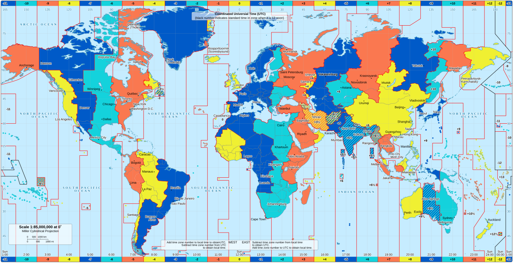
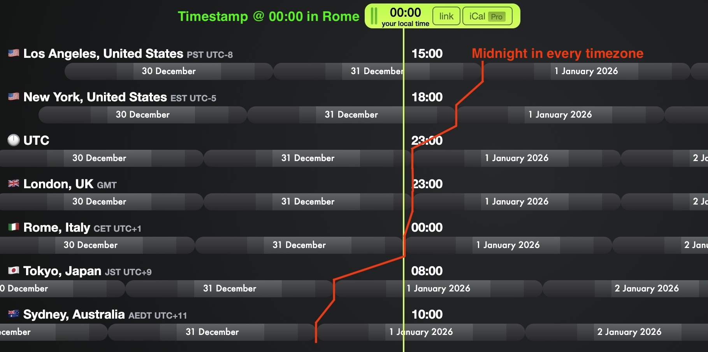

- or -
How your code can be wrong
without changing a single line
Denny Biasiolli
Oct 2026
It's afternoon in Copenhagen
Morning in New York
Evening in Tokyo
Same instant. Three different days,
depending who you ask.
April 1, 2026, 4:52 PM CET
The Head of Finance in New York
joins the Q1 close call
Why is our US East Coast revenue
$2.3 million lower than expected?
47 large March 31 payments never made it into Q1
No, it's not an April Fool's joke
# Quarter Revenue & Cash Report (board + tax + commissions)
# received as parameters
quarter_start = "2026-01-01"
quarter_end = "2026-04-01"
qs = (Payment.objects
.filter(paid_at__gte=quarter_start,
paid_at__lt=quarter_end)
.annotate(quarter=TruncQuarter("paid_at"))
.values("quarter")
.annotate(total=Sum("amount"))
)
Simple. Correct. Obviously right.
Trusted by the CFO, controllers, and the entire finance team.
A customer in New York pays $340k
on March 31 at 20:17 PM local time
Recorded correctly as
paid_at 2026-03-31 20:17:00-04:00
All the queries on the server run in UTC
and classify the payment as 2026-Q2
-- paid_at = 2026-03-31 20:17:00-04:00
-- what users expect in New York
SET TIMEZONE TO 'America/New_York';
SELECT date_trunc('quarter', paid_at);
-- 2026-Q1
-- what the server has in UTC
SET TIMEZONE TO 'UTC';
SELECT to_char(paid_at, 'YYYY-"Q"Q');
-- 2026-Q2paid_at never changes
paid_at value we display in the frontend (API+JSON)How many of you have been personally victimized
by a timezone bug?
I used to think: "It's just a number, how hard can it be?"
I was wrong. So very, very wrong
1781255609
It's the same number everywhere on Earth
The timezone only matters
when you display it to a human
Python counts this in seconds. JavaScript in milliseconds.
Copy-paste and you're in the year 55,000.
A region that agrees to pretend it's the same time
India: UTC+5:30 Nepal: UTC+5:45
Half-hours. Quarter-hours. Because why not?!

Date: 2021, Source: Wikimedia Commons
Created with everytimezone.comJanuary: "Send the daily statement at 9:00 AM New York"
One Monday in March, every New York statement
goes out at 10:00 AM
Check the logs. Everything looks normal.
Check the deploys. Nothing changed.
Check the code. Nothing changed.
Check yourself. Have I changed?
The US sprang forward. Europe hadn't.
The world moved. Your UTC timestamp didn't.
(that look identical until they aren't)
UTC is the universal reference time,
it never shifts for daylight saving
UTC is the boring reliable friend who never cancels plans
Appreciate UTC
Finance doesn't want the daily report at 14:00 UTC
They want it at 9:00 AM in their day,
every single day, regardless of UTC offset
If you store a fixed UTC time and DST changes, the report suddenly runs at the wrong local time
Instead, store 09:00 America/New_York
and recalculate the actual UTC execution time
The intent stays constant
The UTC execution time adapts
| UTC-5 (fixed offset) | America/New_York (timezone) |
|---|---|
| The offset at one specific instant | A set of rules that change over time |
| Always UTC-5, forever | UTC-5 Nov-Mar, UTC-4 Mar-Nov |
| → Use timezone identifiers, not fixed offsets | |
The standard behind every OS
and programming language
Defines rules for every timezone:
DST start/end, offsets, historical changes
In 2011, Samoa skipped an entire day (Dec 30th) by moving across the date line.
Someone had to update this database. Imagine the commit message
(DST was invented by someone who hates programmers)
In New York, DST starts on March 9, 2026 at 2:00 AM
The clock jumps: 1:59:59 AM → 3:00:00 AM
2:30 AM on March 9, 2026 never happened
Some libraries throw. Others silently move you to 3:30.
Know what yours does, and warn the user.
In New York, DST ends on Nov 2, 2026 at 2:00 AM
The clock jumps back: 1:59:59 AM → 1:00:00 AM
1:30 AM happens twice
If it's your alarm clock, pick the second one.
You deserve the extra sleep.
This matters when scheduling the next run:
# skips/repeats the DST hour
next_run = now + timedelta(hours=24)
# respects the local calendar day
next_run = now + timedelta(days=1)datetime object
A naive datetime assumes everyone works in the same timezone,
like people who think it's always sunny everywhere
because it's sunny outside their window
from datetime import datetime
from zoneinfo import ZoneInfo # Python 3.9+
# Naive, 09:00 local timezone
datetime(2026, 10, 26, 9, 0) # try to avoid this
# Aware, 09:00 in New York
datetime(2026, 10, 26, 9, 0,
tzinfo=ZoneInfo("America/New_York"))
timestamptz columntimestamp with time zone
Postgres can set the timezone in six different places.
Server level, connection string, database, user, session, transaction.
Django uses the last one:
SET LOCAL TIMEZONE TO '<SERVER_TIMEZONE_HERE>';Per transaction. Per query. That's the lever behind the $2.3M slide.
Django has built-in support for timezones
You can enable it in your settings with
USE_TZ = TrueAll DateTime fields will be stored in UTC in the database and will be converted to the active timezone when retrieved
You can set the default timezone for your Django application
using the TIME_ZONE setting
TIME_ZONE = "UTC"By default, it's set to UTC, but you can change it to any valid timezone string
When USE_TZ is enabled
Django wraps each query in a transaction that sets
SET LOCAL TIMEZONE
to the currently active timezone
All users will see timestamps in the same timezone set in TIME_ZONE, regardless of their location
And that timezone will be used to query the database too
😞
from zoneinfo import ZoneInfo
from django.utils import timezone
timezone.activate(ZoneInfo("America/New_York"))
Payment.objects.filter(
paid_at__gte="2026-01-01",
paid_at__lt="2026-04-01",
)
# March 31, 20:17 in New York stays in Q1
# Nobody memorized an offset| Who | Where the TZ comes from |
|---|---|
| Fiscal report | they type it |
| Browser | cookie |
| API | X-Timezone |
| Logged-in human | profile |
Ship the combination. That's the middleware.
import zoneinfo
from django.utils import timezone
if request.user.is_authenticated:
tzname = request.user.profile.timezone
else:
tzname = (request.headers.get("X-Timezone")
or request.COOKIES.get("django_timezone"))
if tzname:
timezone.activate(zoneinfo.ZoneInfo(tzname))
Django then converts timestamps to that timezone on the way out.
Cookie, header, and curl examples are in the repo.
1. Use timezone-aware datetimes
Don't use naive datetimes, or you'll have to do timezone math manually
And timezone math is not real math!
2. Store in UTC, display in local time
UTC is the reliable, unambiguous way
to store timestamps
Local time is what users expect to see
That includes your logs.
[2026-03-31 20:17:00] payment received $340k
[2026-04-01 00:17:00Z] payment received $340k
If it doesn't say Z, every post-mortem is a timezone puzzle.
3. Ask for the timezone for sensitive operations
(like fiscal reports)
Don't rely on the server's timezone
or a fixed timezone for all users
Remember: timezone math is not real math!
Have a good cry and then test, test, test.
Denny Biasiolli
dennybiasiolli.com